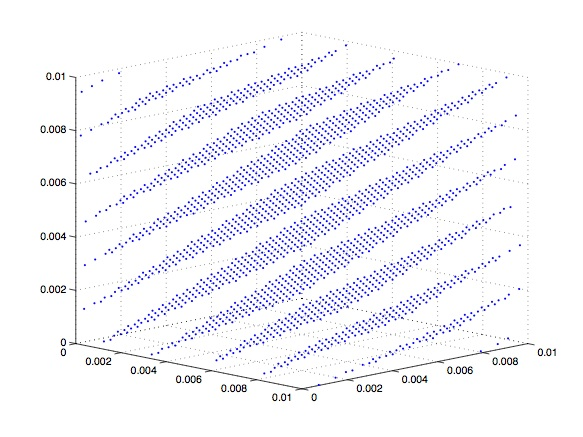
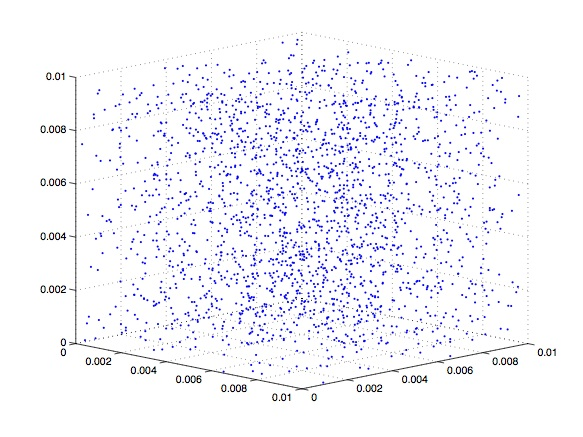
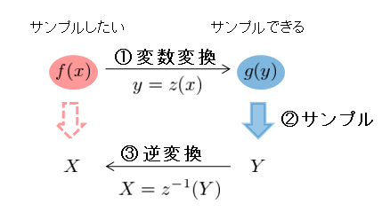

C言語による乱数生成
本文章はC言語を用いて様々な確率分布に従う乱数を生成する方法やコードをまとめたものである。rand関数やメルセンヌ・ツイスタの使い方から始まり, 正規分布・指数分布等の様々な確率分布に従う乱数の生成方法について解説する。このページは
近江崇宏によって作られました。コードはご自由にお使いになってかまいませんが、バグ等によって生じた損失に対する責任は負いません。
- 入門編
- C言語のrand関数の使い方
- メルセンヌ・ツイスタの使い方
- 乱数生成の基礎
- 一様乱数 (Uniform Random Number)
- C言語のrand関数
- 線形合同法 (Linear Congruential Method)
- メルセンヌ・ツイスタ (Mersenne Twister)
- 乱数の質の比較〜特に線形合同法の欠点について
- 逆変換法 (Inverse Transform Method)
- モンテカルロ法
- 各種の確率分布に従う乱数の生成法
- プログラム使用について
- 指数分布 (Exponential Distribution)
- 正規分布・ガウス分布 (Normal Distribution)
- カイ二乗分布 (Chi-squared Distribution)
- コーシー分布 (Cauchy Distribution)
- 対数正規分布 (Lognormal Distribution)
- 逆正規分布 (Inverse Gauss Distribution)
- ガンマ分布 (Gamma Distribution)
- ソースコード
- 参考文献
C言語には乱数を生成するrand関数が標準装備されている。この章はこのrand関数を用いて”お手軽に”乱数を生成する方法を説明する。ただし2章でみるようにrand関数にはいくつかの問題があるために、ここで書かれた方法を研究などに使用することは推奨されないということに注意されたい。あくまでも導入のための”お手軽”な方法である。
rand関数は$0$からRAND_MAXの範囲の整数の乱数を出力する。RAND_MAXは次のコードで確認できる。
#include <stdio.h>
#include <stdlib.h>
int main(void){
printf("RAND_MAX=%d\n",RAND_MAX);
}
次のコードはrand関数を用いて$0$からRAND_MAXの整数の乱数を100個出力するコードである。
#include <stdio.h>
#include <stdlib.h>
int main(void){
int i;
srand(10);
for(i=0;i<100;i++){
printf("%d\n",rand());
}
}
rand関数を使うためにはまず始めにstdlib.hをインクルードしなければならない(2行目)。6行目のsrand(10)は乱数の種（シード）を決めるものである。このコードではsrand関数に10を入力しているが、入力する値が同じであればrand関数は同じ乱数列を出力する。異なる乱数列が欲しいときにはsrand関数に別の値を入力すればいい。また実行毎に自動的にシードをかえたいときには
#include <stdio.h>
#include <time.h>
#include <stdlib.h>
int main(void){
int i;
srand((unsigned)time(NULL));
for(i=0;i<100;i++){
printf("%d\n",rand());
}
}
のように、現在時刻をシードとして使えばよい(7行目)。このtime関数を用いるためにはtime.hをインクルードする必要がある（2行目）。
上ではrand関数をそのまま用いていたが、実用上はある範囲の整数の乱数を得ることが多い。例えばさいころをシミュレートするときには1から6の整数の乱数が欲しい。この場合には、
#include <stdio.h>
#include <stdlib.h>
int main(void){
int i;
srand(10);
for(i=0;i<100;i++){
printf("%d\n",rand()%6+1);
}
}
とすればよい。7行目のrand()%6はrand()を6で割ったあまりを出力する演算子で、rand()%6は0から5の整数の乱数を返す。よってrand()%6+1は1から6の乱数を出力するのである。
より一般的にAからBの整数の乱数が欲しいときには上のコードの7行目を
rand()%(B-A+1)+A;
に返ればよい。
優れた乱数生成アルゴリズムであるメルセンヌ・ツイスタの使用方法のまとめである。性能の評価については２章(
乱数の質の比較〜特に線形合同法の欠点について)を参照のこと。メルセンヌ・ツイスタのCコードは開発者により公開されている（
Link）。まず準備としてメルセンヌ・ツイスタの関数のヘッダーファイル
MT.hを作る(<-めんどくさければこれをダウンロードしてください。)を作る。このサイトから、
Cソースをダウンロードし、44行目の#include<stdio.h>と174行目以降のint main(void){・・・}を消し、ファイル名をMT.hに変える。これでヘッダーファイルの完成である。後はMT.hをメルセンヌツイスタを使うプログラムがあるフォルダに入れて準備が完了である。
次のコードはメルセンヌ・ツイスタの関数genrand_int32()を用いて整数の乱数を100個出力するコードである。
#include <stdio.h>
#include "MT.h"
int main(void){
int i;
init_genrand(10);
for(i=0;i<100;i++){
printf("%ld\n",genrand_int32());
}
}
メルセンヌツイスタの関数を使うためには、まず"MT.h"をインクルードし(2行目)、init_genrand(seed)で乱数の初期化(6行目)を行わなくてなならない。seedの値を変えることで異なる乱数列を得ることができる。ここでメルセンヌ・ツイスタの関数genrand_int32()は$[0,2^{32}-1]$の範囲の整数の乱数を返す(7行目)。またgenrand_int32()の出力は長整数型なのでprintfでの表示には%ldを用いる(7行目)
シードを現在時刻にしたいときには、次のコードのように
#include <stdio.h>
#include <time.h>
#include "MT.h"
int main(void){
int i;
init_genrand((unsigned)time(NULL));
for(i=0;i<100;i++){
printf("%ld\n",genrand_int32());
}
}
さらにtime.hをインクルードし(2行目)、init_genrand((unsigned)time(NULL))で現在時刻で乱数の初期化を行えばよい(7行目)。これで実行ごとに異なる乱数列を得られる。
AからBの範囲の整数の乱数が欲しいときには
genrand_int32()%(B-A+1)+A;
のような関数を用いればよい。
Mersenne Twisterには乱数の関数として以下のも関数が用意されている。
genrand_int32() //符号なし32ビット長整数
genrand_int31() //符号なし31ビット長整数
genrand_real1() //一様実乱数[0,1] (32ビット精度)
genrand_real2() //一様実乱数[0,1) (32ビット精度)
genrand_real3() //一様実乱数(0,1) (32ビット精度)
genrand_res53() //一様実乱数[0,1) (53ビット精度)
乱数とは”ランダム”な数である。乱数の厳密な定義はさておき、乱数は過去の乱数から予測できない予測不可能性や、いくら大きな列をとっても非周期であるという非周期性、分布に偏りがない均等性などによって特徴づけられる。このような乱数がシミュレーション、暗号作成、統計推定など様々な分野において重要な役割を果たしている。
我々がコンピューターで乱数を扱う際には、上でも見たように特定のアルゴリズムによって乱数を模した擬似乱数を生成して、これを乱数の代わりに用いる。本来ならば擬似乱数も乱数と同じ性質を持つべきである。しかしながら擬似乱数は決定論的なアルゴリズムから生成されているため、乱数と違い周期性、予測可能性や分布の偏りがどうしても生じてしまう。そのため研究等で精度の高い解析を得るためには、精度の高い生成アルゴリズムを用いることが重要である。簡単のため以下では乱数と言った時には擬似乱数をさすものとする。
この章ではまず一様乱数を例にして、アルゴリズムの精度の違いが乱数の質にどのように現れるかを見ていく。その後、より複雑な確率分布に従う乱数を生成するための一般的な方法論について述べる。
一様乱数は一様分布
$$p(x)=1\ \ \ (0 \lt x \lt 1)$$
に従う乱数である。次に記述する逆関数法やモンテカルロ法によって、一様乱数からより複雑な乱数を生成することができるという意味で、一様乱数は最も基礎的な乱数の1つである。
C言語を用いて一様乱数を生成する最も簡単な方法は、C言語に標準装備されているrand関数を用いることである。このrand関数は線形合同法という比較的容易な方法に基づいている。しかしながらこれらの方法で生成された乱数列は周期が短いといった問題があるため、研究などでの使用は推奨されない。精度が高い乱数生成法としてはMersenne Twister(メルセンヌ・ツイスタ)がある。その乱数の周期は非常に長く、高度な解析においてはMersenne Twisterを使うことが推奨される。
乱数の精度：線形合同法、rand関数 << Mersenne Twister
以下ではまずそれぞれの方法の詳細をみていき、最後にこれらの方法で得られた乱数の質の比較を行う。
C言語の関数rand();は０〜RAND_MAXの擬似乱数（整数）を出力する。(rand()+1)/(RAND_MAX+2)のように規格化することで一様乱数を生成できる。
#include<stdlib.h>
double Uniform( void ){
return ((double)rand()+1.0)/((double)RAND_MAX+2.0);
}
注：rand関数の基本的な使用法は１章(
C言語のrand関数の使い方)を参照のこと。rand関数の使用にはstdlib.hのインクルードが必要である。乱数の初期化はsrand(unsigned seed)で行う。
線形合同法は定数$a,b,m$に対して、$x_{i+1}=ax_i+b \mod m$の漸化式で$0$から$m-1$の乱数（整数）を生成する。ここで$\mod\ m$は$m$で割った時のあまりを表している。周期は最大で$m$である。$(x+1)/(m+1)$と規格化することで一様乱数が得られる。
double Uniform( void ){
static int x=10;
int a=1103515245,b=12345,c=2147483647;
x = (a*x + b)&c;
return ((double)x+1.0) / ((double)c+2.0);
}
注：このコードは$a=1103515245$,$b=12345$,$m=2^{31}$に対応する。また二行目のxの値を変えることで乱数の初期値(シード)を変えることが出来る。
Mersenne Twisterではgenrand_real3()が一様乱数を返す。ここでは表記の一貫性からUniform()がgenrand_real3()を返すものとする。
#include "MT.h"
double Uniform( void ){
return genrand_real3();
}
注：Mersenne Twisterの使い方は１章(
メルセンヌツイスタの使い方)を参照のこと。Mersenne Twisterの使用にはMT.hのインクルードが必要である。乱数の初期化はinit_genrand(unsigned seed)で行う。
ここでは線形合同法とMersenne Twisterの比較を行う。線形合同法は比較的容易な方法であるが様々な短所があることが知られている。その一方でMersenne Twisterは優れたアルゴリズムとして知られている。アルゴリズムの質を評価するのにはいくつかの指標が考えられるが、ここでは得られた乱数列の周期、予測可能性、及び多次元分布の一様性に着目する。
まず周期であるが
乱数列の周期：線形合同法($2^{31}$) << Mersenne Twister($2^{19937}-1$)
と線形合同法にくらべてMersenne Twisterは非常に長い。Merenne Twisterの周期は一般的に実用上問題がないほど長い。
次に多次元分布の均質性である。線形合同法では一個ずつ乱数$x_i$を用いれば、その経験分布$P(x_i)$は一様である。しかしながらいくつかの乱数$(x_i,x_{i+1},\cdots,x_{i+n})$を組み合わせて用いると、その経験分布$P(x_i,x_{i+1},\cdots,x_{i+n})$は一様ではない。下の図はそれぞれの方法で乱数をサンプルしながら、三次元ベクトル$(x_i,x_{i+1},x_{i+2})$をプロットしたものである。もし各乱数が独立な一様分布に従っているならば、各点が空間上に一様に分布していることが期待される。しかしながら線形合同法を用いた場合には分布に特定の構造があることがわかる（左図）。このためいくつかの乱数を組み合わせて用いるときには注意が必要である。メルセンヌツイスタの場合にはこのような分布の偏りは見られない（右図）。Mersenne Twisterの分布の均等性は623次元以下では保証されている。

逆変換法は得られた乱数（例えば一様乱数）をさらに関数で変換することによって、望みの確率分布に従う乱数を得る方法である。
いま確率分布$p(x)$が与えられたとき、新たな変数$y(x)$の従う確率分布は$p(y)=p(x)|dx/dy|$である。このことより$p(x)$から生成された乱数$\{x\}$を$\{y(x)\}$に変換することで$p(y)$に従う乱数を生成できるのである。例えばのちに述べる指数乱数は一様乱数$x$を$-log(x)$と変換することで得られる。
次にこのことを利用し任意の確率分布$f(x)$に従う乱数$\{x\}$を、与えられた確率分布$g(y)$からサンプルされた乱数$\{y\}$を変換することによって生成することを考える。このためには、
１．変数変換$y=z(x)$の関数形を求める。
２．確率分布$g(y)$から乱数を生成する。
３．変数変換$x=z^{-1}(y)$を行う。
とすればよい。一連の流れは次の図のようにまとめられる。

ここで平均1の指数分布$P(x)=\exp(-x)\ \ (x \geq 0)$に従う乱数の生成法を考えよう。この時には、新しい変数として$y=exp(-x)$を考えよう。すると$y$の従う確率分布は変数変換の公式から
$$P(y)=P(X)|\frac{dx}{dy}|=1\ (0 \le y \le 1)$$
の一様分布になる。よって$y$は一様乱数で生成した後に、逆変換$x=-log(y)$により、指数分布に従う乱数$x$を生成できる。
モンテカルロ法は乱数を用いて確率的な過程を再現する方法である。単純な例では、ここで各試行において1/3の確率である発生するある事象Aを数値的にシミュレーションすることを考えよう。この時には、まず[0,1]の一様乱数$Y$を生成し、$Y$が1/3以下ならAが発生した、それ以外ならばAは発生しなかったと見なせばよい。
より一般的に、確率分布$f(x)$に従う乱数を生成する方法について考えよう。ここで、確率分布$g(x)$に従う乱数をなんらかの方法で生成することが可能であり、$f(x)\le \alpha g(x)$を満たすような定数$\alpha$が存在するとする。その場合には、$g(x)$に従う乱数$X$と[0,1]の一様乱数Yを生成し、$\displaystyle \frac{f(X)}{\alpha g(X)}\le Y$ならば、Xを採択するという方法を取れば、Xは確率分布$f(x)$に従う。
以下では上で述べた逆変換法やモンテカルロ法を用いて、様々な非一様な確率分布に従う乱数を生成する方法について述べる。
各プログラムについては、出来るだけ単体で使えるような記述を心がけているが、ほとんど全ての乱数生成において一様乱数が必要になることから、$(0,1)$の一様乱数を生成する関数Uniform()はすでに与えられているとする（つまり、同一プログラム中でUniform()が定義されている必要がある。2章の
一様乱数に書かれているコードのどれかを持ってくればよい。）。またmath.hのインクルードが必要である。
その他の手段としては、以下の関数のコードが含まれているヘッダーファイル
random.hを用いる方法がある。たとえば、次のコードはrandom.hを用いて標準正規分布に従う乱数を100個出力するコードである。
#include <stdio.h>
#include <math.h>
#include "random.h"
int main(void){
int i;
for(i=0;i<100;i++){
printf("%lf\n",rand_normal(0.0,1.0));
}
}
random.hの関数を使うためには、まずrandom.hをCコードと同じフォルダに置き、Cコード中でrandom.hにインクルードする必要がある(2行目)。そうすれば以下の関数が本文中で使用可能になる。random.hでは一様乱数生成にMersenne Twisterが用いられており、乱数の初期化は自動で行われるようになっている。
[確率分布関数]
$$p(x;\lambda)=\lambda \exp(-\lambda x)$$
期待値、分散はそれぞれ$E(x)=1/\lambda,\ V(x)=1/\lambda^2$である。
[Cコード]
double rand_exp( double lambda ){
return -log(Uniform())/lambda;
}
[解説]一様乱数$x$に対して、$-log(x)/\lambda$が指数分布に従うことを利用。（参考：
2.2.1）
[確率分布関数]
$$ p(x;\mu,\sigma^2)=\frac{1}{\sqrt{2\pi\sigma^2}}\exp\left\{-\frac{(x-\mu)^2}{2\sigma^2}\right\}$$
期待値・分散はそれぞれ$E(x)=\mu,\ V(x)=\sigma^2$である。
[Cコード]
double rand_normal( double mu, double sigma ){
double z=sqrt( -2.0*log(Uniform()) ) * sin( 2.0*M_PI*Uniform() );
return mu + sigma*z;
}
[解説]
まず$\mu=0,\sigma=1$を考える。このときには確率分布関数は$p(x)=(1/2\pi)^\frac{1}{2}\exp(-x^2/2)$である。この場合には正規分布は標準正規分布と呼ばれる。ここで独立に標準正規分布に従う乱数$x,y$を考える。ここで直交座標系$(x,y)$から極座標系$(r,\theta)$への変換を考える。$P(x,y)=P(x)P(y)$を用いると、変換後の確率分布関数は$P(r,\theta)=(1/2\pi)r\exp(-r^2/2)$となる。さらに$r$から$r^2$へと変数をかえると$P(r^2,\theta)=(1/2\pi)\exp(-r^2/2)/2$となる。よって$r^2,\theta$はそれぞれ$\lambda=1/2$の指数数分布、$(0,2\pi)$の一様分布に独立に従うことがわかる。よってそれぞれ$(r,\theta)$をそれぞれサンプルしてから、極座標系から直交座標系への変換$x=r\cos(\theta),y=r\sin(\theta)$により、標準正規分布に従う2つの独立な乱数$x,y$が得られる。この方法はBox-Muller法と呼ばれる。つぎに一般の正規分布に従う乱数は標準正規分布に従う乱数$x$を$\sigma x+\mu$とすれば得られる。
[確率分布関数]
$$p(x;k)=\frac{x^{(k/2)-1}e^{-x/2}}{2^{k/2}\Gamma(k/2)}$$
期待値・分散はそれぞれ$E(x)=k,\ V(x)=2k$である。
[Cコード]
double rand_chi( int k ){
int i;
double z,w=0;
for(i=0;i<k;i++){
z=sqrt( -2.0*log(Uniform()) ) * sin( 2.0*M_PI*Uniform() );
w+=z*z;
}
return w;
}
[解説]自由度kのカイ二乗分布は標準正規分布に従うk個の独立なランダム変数の二乗の和が従う確率分布である。
[確率分布関数]
$$p(x;\mu,\gamma)=\frac{1}{\pi}\left[\frac{\gamma}{(x-\mu)^2+\gamma^2}\right]$$
[Cコード]
double rand_cauchy( double mu, double gamma){
return mu + gamma*tan(M_PI*( Uniform()-0.5 ));
}
[解説]一様乱数$x$に対して$\mu+\gamma\tan(\pi(x-1/2))$がコーシー分布に従うことを利用する。
[確率分布関数]
$$p(x;\mu,\sigma)=\frac{1}{x\sqrt{2\pi\sigma^2}}\exp\left\{-\frac{(\ln x - \mu )^2}{2\sigma^2}\right\}$$
期待値・分散はそれぞれ$E(x)=e^{\mu+\sigma^2/2},\ V(x)=(e^{\sigma^2}-1)e^{2\mu+\sigma^2}$である。
[Cコード]
double rand_Lnormal( double mu, double sigma ){
double z= mu + sigma*sqrt(-2.0*log(Uniform()))*sin(2.0*M_PI*Uniform());//gauss random number
return exp(z);
}
[解説]正規分布に従う変数$x$に対して、$\exp(x)$が従う確率分布が対数正規分布である。
[確率分布関数]
$$p(x;\mu,\lambda)=\left[\frac{\lambda}{2\pi x^3}\right]^{1/2}\exp\left\{-\frac{\lambda(x-\mu)^2}{2\mu^2x}\right\}$$
期待値・分散はそれぞれ$E(x)=\mu,\ V(x)=\mu^3/\lambda$である。
[Cコード]
double rand_Igauss( double mu, double lambda ){
double x,y,w,z;
x=sqrt(-2.0*log(Uniform()))*sin(2.0*M_PI*Uniform());//normal random number
y=x*x; //chi-squared
w= mu + 0.5*y*mu*mu/lambda -(0.5*mu/lambda)*sqrt(4.0*mu*lambda*y+mu*mu*y*y);
z=Uniform();
if( z< mu/(mu+w) ) return w;
else return mu*mu/w;
}
[解説]逆正規分布に従う変数$x$に対して、$\lambda(x-\mu)^2/\mu^2x$が自由度1の$\chi$二乗分布に従うことを利用する。
[確率分布関数]
$$p(x;\theta,\kappa)=\frac{x^{\kappa-1}\exp\{-x/\theta\}}{\theta^\kappa\Gamma(\kappa)}$$
期待値・分散はそれぞれ$E(x)=\kappa\theta,\ V(x)=\kappa\theta^2$である。
[Cコード]
double rand_gamma( double theta, double kappa ){
int int_kappa;
double frac_kappa;
int_kappa = (int)kappa;
frac_kappa = kappa - (double)int_kappa;
double u,uu;
double b,p,x_frac,x_int;
int i;
/*integer part*/
x_int=0;
for(i=0;i<int_kappa;i++){
x_int+=-log(Uniform()); // add expnential random number with mean 1
}
/*fractional part*/
if( fabs(frac_kappa) < 0.01 ) x_frac=0;
else{
b=(exp(1.0)+frac_kappa)/exp(1.0);
while(1){
u=Uniform();
p=b*u;
uu=Uniform();
if(p<=1.0){
x_frac=pow(p,1.0/frac_kappa);
if(uu<=exp(-x_frac)) break;
}
else{
x_frac=-log((b-p)/frac_kappa);
if(uu<=pow(x_frac,frac_kappa-1.0)) break;
}
}
}
return (x_int+x_frac)*theta;
}
[解説]参考文献[1]のp. 425参照。
1.
MT.h：メルセンヌ・ツイスタの関数のヘッダーファイル（使い方：
メルセンヌ・ツイスタの使い方）
2.
random.h：3章の関数のヘッダーファイル（使い方：
プログラム使用について）
[1] Luc Devroye, "Non-Uniform Random Variate Generation" (available at
here).